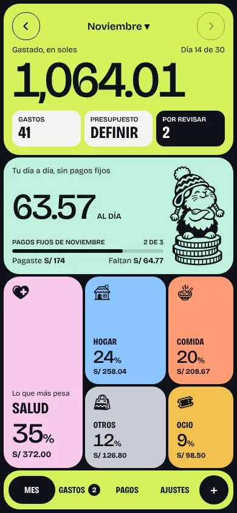
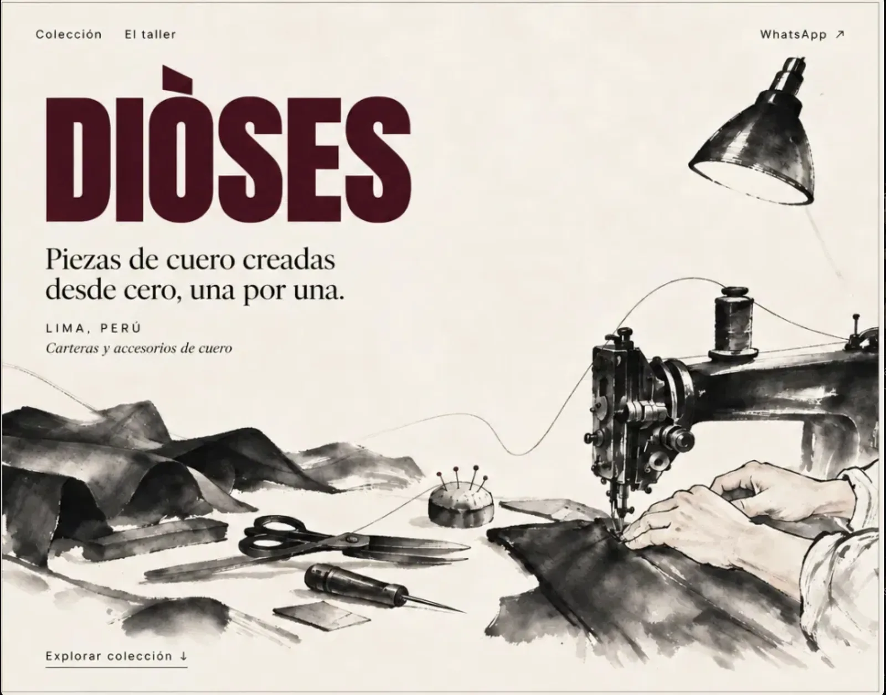

Diseño y construyo herramientas con IA que la gente usa de verdad, en Pacífico Seguros y en proyectos propios.
Rodrigo
Montes
Centraliza todo lo que se publica sobre el Fenómeno del Niño, avisa por SMS cuando pasa algo y redacta qué decirles a los clientes de la zona.
Observa
torio
Alertas automáticas para 4 áreas de Pacífico
Clientes, Marketing, Sostenibilidad y Siniestros reciben el aviso en el celular. Envió entre 8 y 10 alertas en sus primeras semanas.

Cómo se automatizó
- 1Escucha
Dos modos. Reactivo: prensa y X de medios y especialistas. Preventivo: SENAMHI, INDECI y COEN.

- 2Detecta
La IA reconoce inundaciones, huaicos o deslizamientos y los marca como reactivos para priorizarlos.

- 3Resume
Centraliza, analiza y resume lo publicado. No pronostica: ordena lo que dicen las fuentes.
- 4Avisa y propone
Envía un SMS con Dana Connect y redacta propuestas de push, correo, SMS, WhatsApp y redes.
Dana Connect


Cada equipo buscaba las noticias del Niño por su lado y llegábamos tarde a avisar a los clientes. Ahora la alerta llega sola.
El problema
Avisos oficiales, reportes de emergencia, noticias y publicaciones en X llegaban por canales distintos y sin verificar.
Lo que hice
Idea, diseño y desarrollo: el monitor con sus dos modos, el mapa del día, las alertas por SMS y las propuestas de comunicación.
Lo que cuidé
Cada señal muestra si es oficial, de medios, de especialista o está por verificar. Las capturas usan datos públicos y {nombre} en lugar de clientes.
CuantIA, un agente en Teams que responde cuántos clientes hay por periodo, línea de negocio, canal o segmento.
Agente
de datos
Consultas de 5 a 10 minutos, resueltas en una conversación
Planeamiento, Sostenibilidad, Producto y Canales dejaron de depender de que yo estuviera libre.

Cómo funciona
- 1Preguntas
En Teams, como le escribirías a una persona: "cuántos clientes tenemos en autos".
Teams - 2Busca
Consulta la data de cuantificación y las definiciones en SharePoint.
SharePoint - 3Responde
Da el número con su periodo, cita la fuente y enlaza al dashboard oficial.

- 4Sabe su límite
Si le piden algo fuera de su alcance, lo dice y propone alternativas.

El problema
Cada consulta de cuantificación tomaba entre 5 y 10 minutos y esperaba a que yo estuviera libre.
Lo que hice
Lo diseñé y construí en Copilot Studio, conectado a SharePoint. Validé sus respuestas contra el dashboard oficial antes de abrirlo.
Lo que aprendí
Para escalarlo hacía falta conectarlo a Power BI y automatizar accesos. En una empresa grande, el cuello de botella de la IA suele ser el acceso a los datos, no el modelo.
Cifras internas difuminadas.
Me escribían varias veces al mes para pedirme el mismo tipo de número. Lo convertí en una conversación que no depende de mí.
Una app de gastos que se llena sola: lee los correos de BCP, Yape y Plin y solo te pide la categoría.
Cuydado
Cero gastos anotados a mano
Producto, diseño y desarrollo hechos por mí, con desarrollo asistido por IA.



Cómo se automatizó
- 1Pagas
Con Yape, Plin o tu tarjeta BCP, como siempre.
- 2Llega el correo
Un script lee el correo de pago y crea el gasto pendiente.


- 3Te avisa
Una notificación push llega al instante.

- 4Un toque
Eliges la categoría y queda guardado.

Me cansé de anotar gastos a mano, así que hice que se anotaran solos.
Montos de ejemplo.
Merch hecho en Lima para estudios de pilates, gimnasios boutique y barberías de Estados Unidos.
Hebras
Un catálogo completo sin una sola sesión de fotos
La marca y los textos, con Claude y ChatGPT. Las fotos, generadas en Higgsfield desde Claude, conectado por MCP.


Quería mostrar un catálogo completo antes de producir una sola prenda. Con IA lo armé sin una sesión de fotos.
Un catálogo web para que las clientas de mi mamá vean todo lo que hace: carteras de cuero hechas a mano en Lima, con precio, medidas y colores.
Diòses
Todo su catálogo a la vista, con pedido directo a WhatsApp
Hecho con Claude. Cada pieza abre una conversación de WhatsApp con el modelo ya elegido.


Mi mamá necesitaba que sus clientas pudieran ver todo lo que hace antes de escribirle.
Seis años entre datos, marketing y experiencia de cliente. Empecé en publicidad y terminé escribiendo SQL. Hoy junto las dos cosas para construir con IA.
- Pacífico Seguros, Business Specialist 2024 – hoy
- Grupo Pana, CX Analyst 2022 – 2024
- Entel Perú, Data Analyst 2022
- Havas Media Group, Data Assistant 2020 – 2022
Formación
- PUCP, Bachiller en Publicidad 2022
- DMC Perú, Python for Analytics 2023